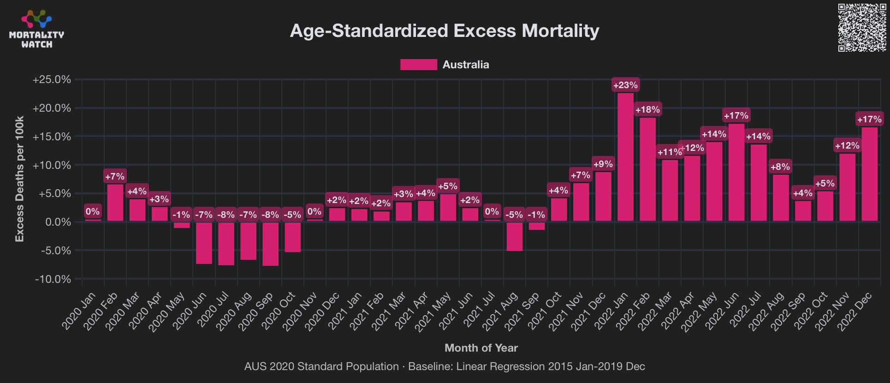
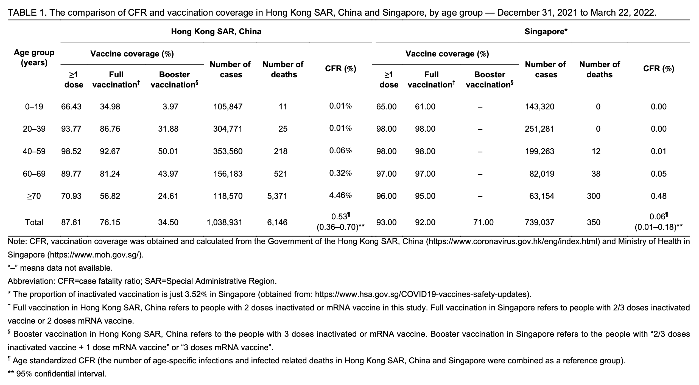

One of the judges commented: "According to claims in this article excess deaths in Australia started in May 2021 when we were still Covid free?"
The article he linked said: "'In 2021, when the smaller states had virtually no cases of Covid. Yet despite this, deaths jumped 5.4 per cent from the year before for the country,' Senator Rennick said in a recent statement."
The mainstream media are peddling misinformation around excess deaths blaming it on Covid.
They can easily confuse the issue for 2022 as Covid was in the community that year. (Despite almost everybody being vaccinated.)
That however wasn't the case in 2021 when the smaller states had virtually no cases of Covid. Yet despite this, deaths jumped 5.4% from the year before.
This increase happened from May onwards one month after the start of the vaccine rollout. (See figures in comments below)
What's significant however is that the smaller states had a higher jump in deaths even though they had no Covid.
The only variable to explain that was the vaccine rollout. NSW and Victoria would have been higher had it not been for the draconian lockdowns in those states.
The argument about lockdowns delaying deaths is true but not as much as the jump in excess deaths. Deaths dropped nationally by 2,000 in 2020 but jumped by 8,706 in 2021.
The data is sourced from the ABS mortality figures.
Rennick simply compared the number of deaths during each month of 2021 against the number of deaths during the corresponding month of 2020. So the increase in deaths between the winter of 2020 and the winter of 2021 was partially because there was negative excess mortality in the winter of 2020. And the increase was also partially due to the aging population, which has caused the number of deaths in Australia to go up almost every year since 2005: https://www.mortality.watch/explorer/?c=AUS&t=deaths&ct=yearly&e=0&df=1994&bm=lin_reg.
If you use a 2015-2019 linear baseline for ASMR in Australia at Mortality Watch, the monthly excess ASMR in May to September of 2020 ranges from about -8% to -1% with an average of about -6.1%, but in May to September 2021 the monthly excess AMSR ranges from about -5% to 5% with an average of about 0.2%: [https://www.mortality.watch/explorer/?c=AUS&ct=monthly&e=1&df=2020%2520Jan&dt=2022%2520Dec&bm=lin_reg]

So even though the average excess ASMR in May to September of 2021 was close to 0%, it was far below zero in 2020 which explains most of Rennick's excess deaths.
One of the judges asked: "As almost everyone in HK was vaccinated before omicron, why were there so many excess deaths during Omicron wave - surely the vaccine should have prevented these?"
On OWID Hong Kong has about 170% excess mortality in March 2022 even though there were already about about 82% of people vaccinated at the end of February 2022 and 87% of people vaccinated at the end of March 2022:
The reason for the discrepancy seems to be that Hong Kong unusually had a low percentage of vaccinated people in elderly age groups relative to younger age groups. Jeffrey Morris wrote: [https://x.com/jsm2334/status/1872719660111614216]
Look at Covid death rate in Hong Kong Omicron wave in early 2022 that hit a population with low population immunity - extremely low previous infection rates in 2020-2021 and low vaccination rates - especially among seniors - among highest death rate of any time/place of the pandemic
It wasn't that Omicron was that much less virulent and potentially deadly - it was that by the time Omicron hit population immunity levels were high most every place in the world - from previous infections and vaccinations - except places like Hong Kong
Singapore had a similar Omicron wave in early 2022 with very low national previous infection rate - with similar case rates but COVID death rates >10x lower - and their vaccination rate was high throughout all age groups when it hit. Btw the case fatality rate by vaccination status was similar in both countries - so the key difference was proportion vaccinated - especially in the older age groups.
Morris's plot was based on a paper published by China CDC titled "Association Between COVID-19 Vaccination Coverage and Case Fatality Ratio: a Comparative Study - Hong Kong SAR, China and Singapore, December 2021-March 2022": https://pmc.ncbi.nlm.nih.gov/articles/PMC9433760/.
In Table 1 of the paper the percentage of fully vaccinated people in ages 70 and above in Hong Kong was listed as 56.82%, which is higher than in Morris's plot, but it might because Morris's plot showed the percentage of vaccinated people on January 1st 2022 but the paper by China CDC appears to have shown the percentage of vaccinated people on an unspecified date when the authors retrieved the data from a Hong Kong government website:

I took mid-2022 resident population estimates in Hong Kong from here, which I interpolated to daily resident population estimates: https://www.censtatd.gov.hk/en/web_table.html?id=110-01001&full_series=1&download_csv=1. I took the number of people who had received a second dose from here: https://data.gov.hk/en-data/dataset/hk-hhb-hhbcovid19-vaccination-rates-over-time-by-age. When I calculated the average cumulative number of people in each age group who had received a second dose between December 31st 2021 and March 22nd 2022, and I then divided it with the mean interpolated population estimates during the same period, the resulting percentage was only about 51% for ages 70-79 and 28% for ages 80+:
The percentage of people with a second dose in ages 60-69 was about 65% in my code above but about 81.24% in the paper by China CDC. The reason for the difference might partially be if the paper by China CDC looked at the percentage of vaccinated people at the end of the observation period, but even on March 22nd I got only about 76% vaccinated people in ages 60-69 which was still lower than in the paper by China CDC. The authors might have also taken the percentage of vaccinated people on the date when they retrieved the data which might have been after the observation period had already ended.
A note below Table 1 of the China CDC paper says: "Note: CFR, vaccination coverage was obtained and calculated from the Government of the Hong Kong SAR, China (https://www.coronavirus.gov.hk/eng/index.html) and Ministry of Health in Singapore (https://www.moh.gov.sg/)." The linked website doesn't currently seem to include time series data of vaccinated people by date, but it only shows the present percentage of vaccinated people.
However an old snashot of the linked website had more detailed data, which included a CSV file that showed the number of people with a second dose by age group along with population estimates for the age group. [https://web.archive.org/web/20220313215249/https://www.covidvaccine.gov.hk/en/dashboard, section "Vaccine Doses Administered (Age Group)", link "Click to Download CSV data"] In a CSV file from March 13th 2022, the number of people with a second dose was close to identical to the data I used above, but the population estimate of ages 60-69 was about 7% lower, which explained why the percentage of people with a second dose was higher than in my code:
But in any case it should be clear that Hong Kong had a low percentage of vaccinated people in elderly age groups during the first Omicron wave, even though many additional people got vaccinated during the Omicron wave who had earlier not been vaccinated: